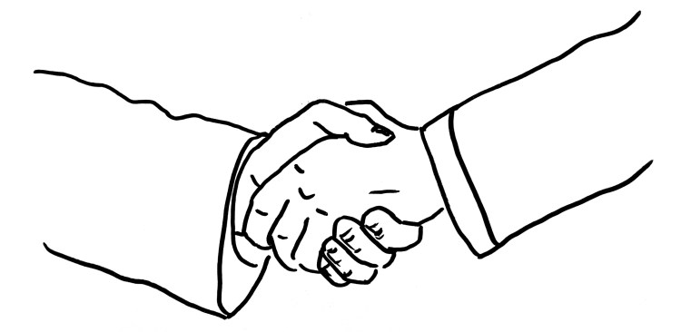
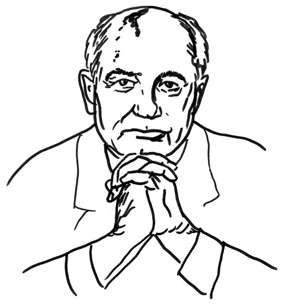

W.H. What did you think when you heard about the death of Mikhail Gorbachev?
G.H. The profound tragedy of his life! Mikhail Gorbachev is, in my eyes, one of the greatest, perhaps the greatest politicians of the 20th century. He achieved unbelievable things – and reaped in his region of the world above all thanklessness and incomprehension. At the end of his life, he was shamefully lonely, disregarded, and even outright hated by the majority of his compatriots. Associated with this is a second tragedy that I find even greater. It is related to the question of what has become of his grandiose impulse today. Certainly, indirectly, in some cases unintentionally, Gorbachev’s mission had planetary dimensions. But it was first addressed to his country and his fellow human beings. He wanted to free them from the tribulation of an anti-human, totalitarian society. Gorbachev’s goal was to democratize the Soviet Union and Russia, to open them up to intellectual freedom and plurality as well as to a free and, at the same time, social economy, to rebuild the totalitarian, static system into an order that was self-determined, capable of development by the people. And today? Putin rules increasingly lonely and unteachable, authoritarian, aggressive, even totalitarian internally and externally, and wages war. Those who dare to call a spade a spade must exchange their freedom for prison. The course of history is sometimes cruel. Thirty years after Mikhail Gorbachev’s great political thaw, this largest country on earth is ruled by forces that do not stand for what he has tried to strive for.
W.H. In 1985 Gorbachev became general secretary of the CPSU and thus head of government, and we learned what ‹Glasnost› and ‹Perestroika› mean. What did it mean to you as a political activist during the Cold War?
G.H. The Cold War became more and more dangerous. In the mid-80s, we had 50 times overkill. In other words, the East and West’s arsenal of nuclear, biological, and chemical weapons was so vast that it could have wiped out humanity 50 times. In addition, the warning times became shorter and shorter. I fought in the peace movement at the time. We advocated for unilateral disarmament. We declared: «I am ready to live without the protection of military armament!» We were convinced that we had to be the ones who started, and then the other side would follow. The government at the time declared us naïve and dangerous. After all, everyone was afraid of the Soviet Union or the Russians. They said: if the West disarms, the other side will take advantage of it.
Then the unbelievable happened: the Secretary General of the Soviet Union, which is considered the greatest threat, declared before the French National Assembly, declared in the German Bundestag, and declared in the American Congress that we had to end the arms race. The Soviet Union would, therefore, unilaterally withdraw nuclear missiles, and he suggested that the other side do the same. He changed the world and the course of history. And the man did not speak coldly, calculatingly, in a calculation, but openly, honestly, from the heart. You could feel that he was serious. What no Western or European politician had dared to do, he, Gorbachev, dared to do so. You could feel tremendous joy moving around the globe.
What came out of it was impressive. The cycle of mutual arming was stopped. The nuclear warheads were destroyed in a controlled manner under the eyes of both sides. Not only that: but from then on, observers from the other side were present during maneuvers and more significant troop movements. Trust was formed. Gorbachev’s impact went beyond the military. The Iron Curtain between East and West, the wall and barbed wire that divided Germany and Europe, fell due to the freedom Gorbachev granted to the countries of Central and Eastern Europe. The eastern military alliance, the Warsaw Pact, dissolved, later also COMECON, the Council for Mutual Economic Assistance, and the Soviet Union itself. To this end, the NATO-Russia Council, or the Partnership for Peace, was formed. At the time, I hoped: «Now Europe is growing together! A common space of security and freedom. We will create a large, demilitarized zone in which we no longer secure peace against each other, but with each other, by constantly strengthening trust – including Russia!»
W.H. «Dangers await those who do not react to life.» This is what Gorbachev said during his visit to Germany. This became: «If you come too late, life punishes you.» What did he mean?
G.H. In intellectual life, ideology prevailed, in politics, a centralist apparatus, and in the economy, plan. And now their top representative says you have to listen to life. On the living – and on the developing and changing in time, the people. Learning from life means the end of every totalitarian claim. With this sentence, Gorbachev adopted ideology such as the party’s claim to power, functionaries and apparatchiks, centralism, and plan – and relied on life: the power of a living spirit that can ignite and change the whole world. That’s how people understood him. And they experienced it as support. Because he was speaking into a tense situation on October 6, 1989, when the GDR gerontocracy wanted to be celebrated, although the people had long since grown tired of the totalitarian masquerade. Unlike his predecessors, Gorbachev rarely read. He expressed himself spontaneously in conversation. He wanted to talk to people and learn from them. He preferred to mingle with the people, a nightmare for the security personnel. This is also the case here. Gorbachev broke protocol and ran to a group of people who surrounded him immediately. He spoke freely, improvised, earnestly, and authentically. The shape matched the content. Gorbachev encouraged his friends in the GDR. They now knew that Russia would not send tanks, unlike in 1953 and 1968.
W.H. How could Gorbachev’s ideas possibly come to the forefront of the CPSU’s wheels?

G.H.: Yes, how could this happen? Lenin – Stalin – Malenkov – Khrushchev – Brezhnev – Andropov – Chernenko – these were his predecessors as general secretaries of the CPSU. It is worthwhile to visualize these physiognomies, these characters, for a moment. Then the contrast becomes clearer. Mikhail Gorbachev was born as a farm boy in the North Caucasus. Few people know that his grandfather was arrested under Stalin and disappeared for 14 months. The family had to worry whether the beloved grandfather would come home again. Gorbachev rose early in the party, was at first secretary for the youth, then for agriculture, and a member of the Central Committee. He was considered capable and the man of the future. His great patron was Yuri Andropov, the former KGB chief, who, seriously ill and so only briefly in office, tried his hand at a renewal of socialism and was looking for young, mentally fresh cadres.
W.H. In 1999 he said in the German Bundestag: The unity of Germany had opened up «against the background of global changes a perspective for the transition of the world community to a new, peaceful stage in world history.» What do you think about that?
G.H. That’s true. The Cold War was over, Europe on its way to reuniting in freedom, and the window wide open for a new, lasting peace order. But unfortunately, only for a short time. Then it was shut closed. From both sides. Unfortunately, I have to say that the West did not seize Gorbachev’s wholeheartedly open hand. Or only to the extent that we benefited from it. That is why it is not enough for us to thank him for German unity. What Gorbachev wanted, a ‹common house of Europe›, in common, partnership-based security, was increasingly thwarted by the West and, in the end, literally trampled underfoot.
Expansion of NATO to the East? Stationing new strategic weapons? INF Treaty? George W. Bush Jr. did not think that one had to stick to the promises made by his father. His reasoning: «We won the Cold War!» This is the historical fault of the West.
Added to this is the tragic irony of history that the changes initiated by Gorbachev have brought many countries of the world a dividend of freedom and peace but ultimately excluded his own country. Here, too, we are partly to blame. Because in the middle and the West, there was no will to help the spiritually, socially, and politically devastated Russia onto its feet, similar to what was done in Germany after the Second World War. Instead, a triumphalism spread in the West that helped Russia less than it humiliated it. This, but even more so, the yawning spiritual emptiness, the political stagnation, and the economic lethargy after three-quarters of a century of planned economy and totalitarianism plunged the country into a trauma of lost power and lost order and greatness. Aggressive nationalism thrives on this soil. That Russia is now making an unsuitable attempt to restore this sunken greatness through warlike invasion and subjugation of its neighbors is inexcusable.
W.H. One of the images of this time of upheaval is the hike of Gorbachev and Helmut Kohl on the banks of the Bolshoi Zelenchuk River. As cardigan diplomacy, the conversation went down in history.
G.H. People make politics. Always. In the end, the people always continue to spin the wheel of history in one direction or another. Gorbachev showed this emblematically when he ended the rule of the apparatus or the war in Afghanistan, overcame totalitarianism, and dissolved the Warsaw Pact. He was a man of inner strength and substance. Everything was tentative. The goal was not clear, only the attitude. Thus, Gorbachev was initially an opponent of German unity; he feared the expansion of NATO to the east. It was only because of his experiences with the people in both Germanies and the rapprochement and confidence building in the talks with Kohl and Genscher that he changed his mind.
W.H. He has been celebrated like John Kennedy once was.
G.H. That’s true. It should not be forgotten that Helmut Kohl compared him to Goebbels in ‹Newsweek› in 1986. This is an example of how hateful the view from West to East was at that time and how important it was that Kohl himself was able to overcome this view in the encounters. He later had to apologize for this in the Bundestag. You can’t say that it was easy for Kohl to apologize. I don’t remember any other apology from him, although he often had reason to do so. That says more about Gorbachev than about Kohl. The persuasive nature made such a comparison seem impossible. What fascinated people so much? I believe it was his palpable authenticity, integrity, and moral substance. By the way, Raissa Gorbachev, his incredibly endearing wife, who accompanied him everywhere, also contributed to the positive image.

W.H. And that is not enough if this outstretched hand is not accepted?
G.H. Gorbachev’s hand was gladly accepted. But ultimately, only where the West also expected advantages. On the other hand, it was rejected where it would have been up to us to help and act unilaterally. Above all, however, his path led into the void. Because where he wanted to go, there was nothing. No idea, no support. That was and is also our omission. Gorbachev has, and this is his most significant merit, ended the cruel ‹socialist experiment in the East.› Propagated as an alternative to capitalism, it had failed long before it due to its lack of freedom. Glasnost and Perestroika led to freedom and change – but what did that mean for the economic system? Just as capitalism is blind to the social, socialism is blind to freedom. They were looking for a way that combined freedom and sociality. But Gorbachev had no idea for a new economic order. And without a guiding idea and strategy, the unleashed forces of material egoism made the country its own. The former state economy fell into the hands of a caste of oligarchs and kleptocrats. If – and here we have to look at ourselves – a political and economic order would have been available at that time that could combine freedom, democracy, and socialism, and if the steps had been clear, it might have turned out differently. They did not exist – and so the ‹national wealth› moved in opaque ways into the hands of the oligarch circles. It is they who, together with Putin, determine the Russian economy and politics today. He has lost everything. He has lost power, his influence, his excellent reputation, and his standing in the country. He put everything at risk.
W.H. What do we owe Gorbachev?
G.H. We should pick up where he left off, everyone in their own way. He was a terrifically successful loser. He lost everything. He lost power, his influence, his excellent reputation, and his standing in the country. He put everything at risk. Gorbachev had to go through this gate to win the most valuable thing: Glasnost and Perestroika – human freedom and development. This Gorbachev power to go through the zero point to dedicate oneself to insight, the living, and a new quality of will, which I desire for all people. Gorbachev’s work is not complete. It calls for us to continue: to marry freedom, democracy, and socialism.
W.H. Gorbachev, the great idealist and realist in this hour of history, to whom the environment did not resonate and who missed the mark. Is that it?
G.H. Yes. That doesn’t just concern me with him. There is one or the other with a tremendous impulse. And you ask yourself: Where are those who understand him, who cooperate congenially? Why couldn’t we do otherwise? Why couldn’t the people of Russia react differently to Gorbachev? Why did he find so many admirers, so many profiteers, and so few genuine comrades-in-arms? History is always a struggle of antagonistic forces, and progress is relative, never absolute.
W.H. Here we touch on an archetype that belongs to the myth of Christianity – the one and the henchmen, the light and darkness that does not receive it.
G.H. That’s right. Whereby this gesture is transformed – I maintain: shifted more and more to the inner scene. We are less spectators of an external event. Whether or not we know it, we are more involved in it. Gorbachev could do what he did from a position of absolute power, as held by a general secretary of the CPSU in the Soviet system at the time. But he himself has abolished this position. It no longer exists. In the future, it will be less and less about an individual determining the course of humanity like a ‹leader›. Instead, it is essential to understand that we all bear this responsibility to determine this course. It is, therefore, increasingly important that we learn something that has succeeded in parts under and through Gorbachev, for example, for a time, in the citizens’ movement of the GDR, in Poland, in the Baltic States, Armenia, and Georgia. There lived a substance that allowed people to stand against tanks with candles. But that only carried on for a short while. German and European unity is stuck halfway. Spiritually, what has separated us has not been overcome. The bridge between the Western and Eastern systems has not been built.
W.H. Resonance was missing. How does this phenomenon manifest itself in the macro-social and micro-social?
G.H. I can hardly imagine a more hostile environment than the Central Committee of the CPSU. The fact that he has nevertheless achieved so much shows his strength. If you want to make a difference today, you must work together. The time of outstanding individual personalities is coming to an end. They are replaced by collegial cooperation. We need them today in a broad sense. It helps to hear what is speaking to me from the other person(s). Where can I serve good development? The conversation replaces the decree. That was also Gorbachev’s gesture. Perestroika means the law of human development and Glasnost spiritual freedom as its prerequisite. Gorbachev has thus erected two pillars. Spiritual freedom and development are the foundations of any worldview that does not lead to compulsion or isms but constantly transforms and evolves with people. Added to this was the gesture of open arms: Let’s build a common house Europe, let’s disarm together! Where we make these three gestures our task, we are on the way to continuing Gorbachev’s work.